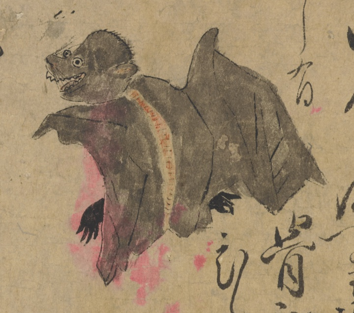

蝙蝠；コウモリ，獣；ケモノ，鳥；トリ，動物；ドウブツ，ノブスマ；ノブスマ

蝙蝠のような姿。黒い。血を吸う。猫くらいの大きさ。羽を広げると四尺くらい。背に筋がある。骨がないかのように薄い。
著作者：長岡多門／出典：親書誌：U426_nichibunken_0448：諸国妖怪図巻／日付：2019／資源識別子：U426_nichibunken_0448_0001_0000
Copyright (c)2010- International Research Center for Japanese Studies, Kyoto, Japan. All rights reserved.